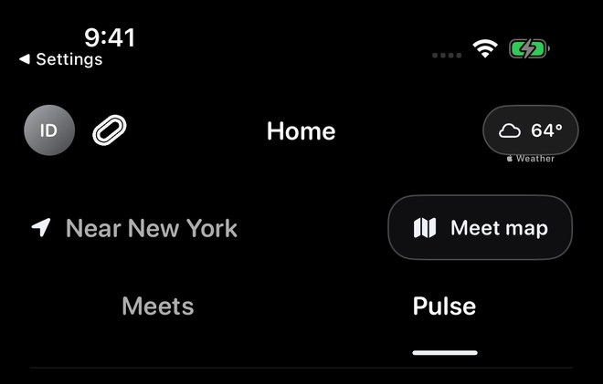
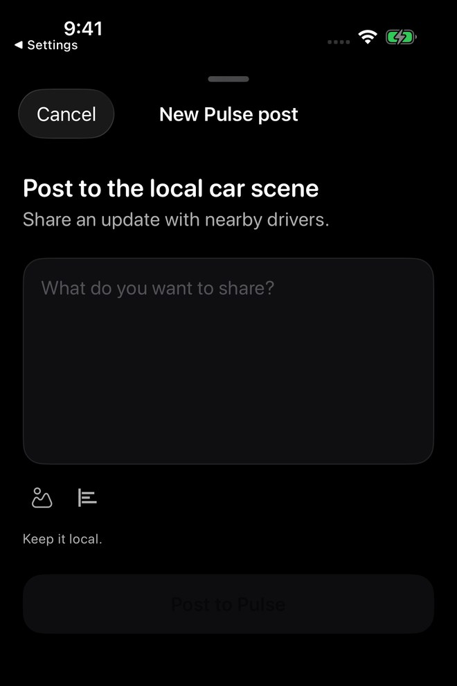
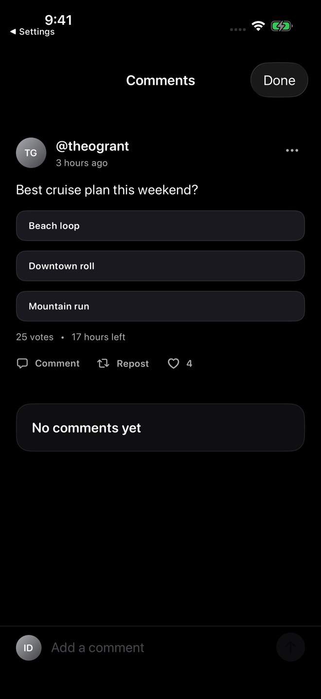
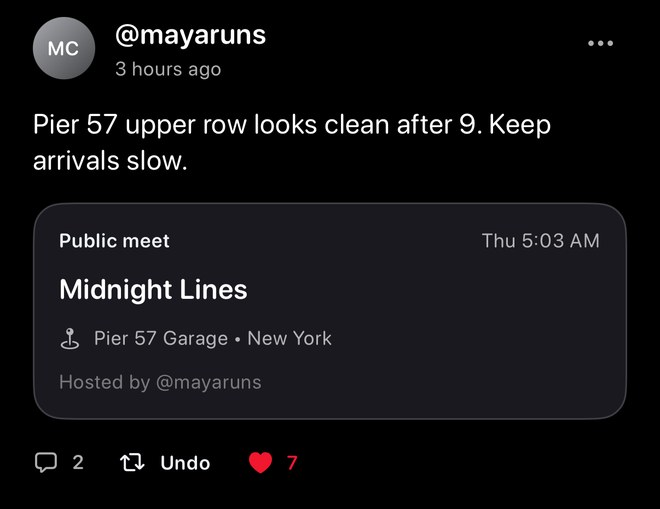

Screenshots show sample content from the Idle test drive in a prerelease build, version 1.3.0 (1), using Dark appearance and Alpine White. Your app may look different. Learn about the test drive.
Open Pulse from Home
Open Home, then select Pulse beside Meets. Browse the feed for short updates, polls, and public meet cards.
The screenshot highlights the navigation. The feed changes as you scroll, so the full content of a post may be farther down the screen.

Start a new Pulse post
Tap the pencil compose button to open New Pulse post. Write your update, then review it before using Post to Pulse.
The composer includes photo and poll entries. See Pulse polls for questions and answer choices.
Keep it local refers to the local car scene. Treat Pulse as a community sharing surface and only post information you are comfortable sharing publicly.

Open the conversation
Use Comment on a post to open its Comments view. Read the post and existing replies, then use Add a comment when you want to respond.
Review what you write before sending. Use Done to return to the feed.

Open a public meet card
A public meet card can show the meet name, date and time, location, and host. Tap the card to open the full plan.
The captured Midnight Lines card opened its matching Meet page. When someone posts on another host’s behalf, public cards can distinguish Posted by from Hosted by; see Host credit.
Public host credit does not transfer editing, cancellation, or Host Tools permissions. If a meet becomes unavailable to you, its old details may no longer appear.

Other Pulse actions
- View photosTap a Pulse photo to open it full screen. Pinch or double-tap to zoom, save it to Photos, or swipe vertically to return when it is not zoomed.
- Share linksAdd useful web links when they help the post or comment. Idle may ask before opening a link outside the app.
- Like or repostReact to posts and bring useful updates back into the feed.
- MentionMention drivers or groups when they are relevant and visible to you.
- Attach a meetPublic meet cards can be attached where supported. Keep private, group-only, and invite-only meets in the spaces where they belong.
What to expect
- Saving photosSaving a Pulse photo requires permission to add it to your iPhone Photos library.
- Reduce MotionFull-screen photo transitions follow your iPhone’s Reduce Motion setting.
- AvailabilitySome content may not appear if it was deleted, reported, blocked, hidden, or is no longer available to you.
These examples cover navigation and empty composer/comment screens. Posting, voting, media import, photo permissions, external links, and notification delivery were not tested.
Troubleshooting
- Post failedCheck the message, edit if needed, and retry.
- Photo failedTry a smaller supported image and check your connection.
- Photo will not saveCheck Idle’s Photos permission in iPhone Settings, then try again.
- Link will not openCheck that the link is complete, then use the confirmation prompt if one appears.
- Notification opens ActivityThe original Pulse content may no longer be available.
Report Pulse content
If a Pulse post or comment is abusive, spammy, misleading, or unsafe, use the in-app report option or email support@idlemeets.com.